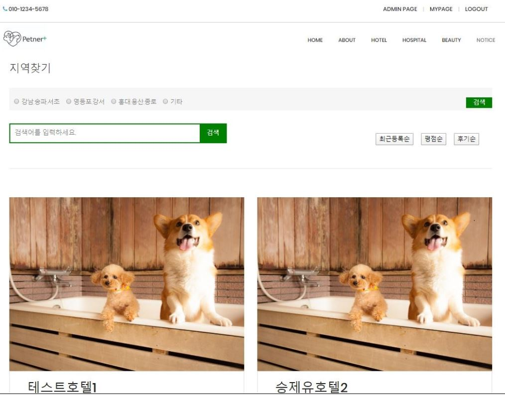
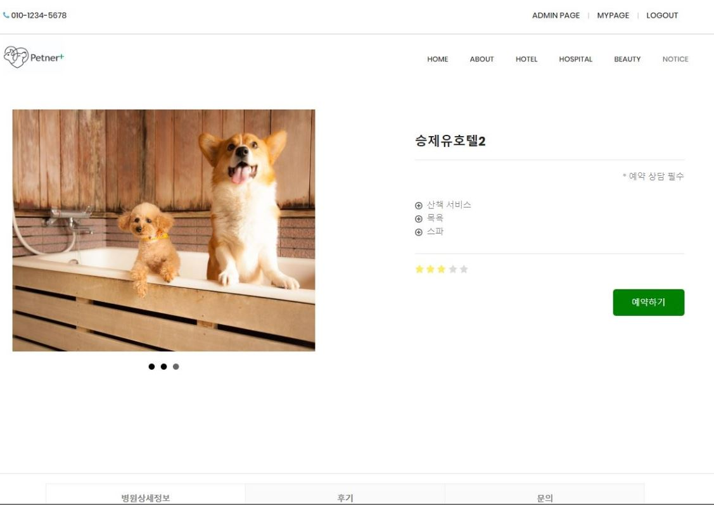
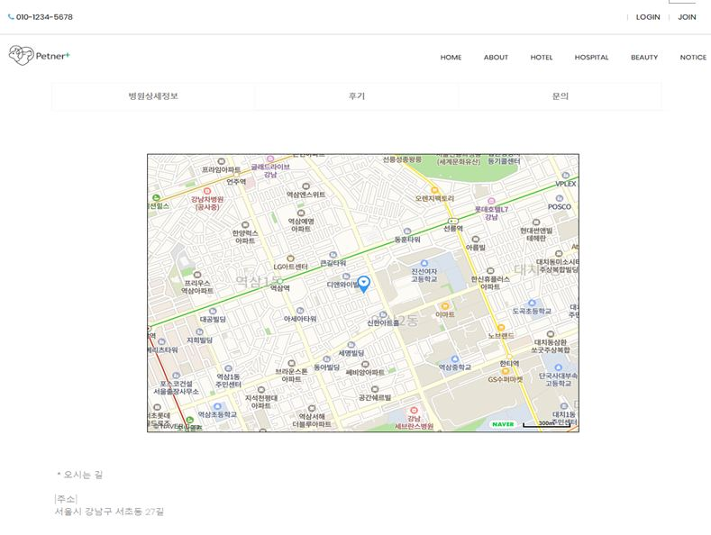
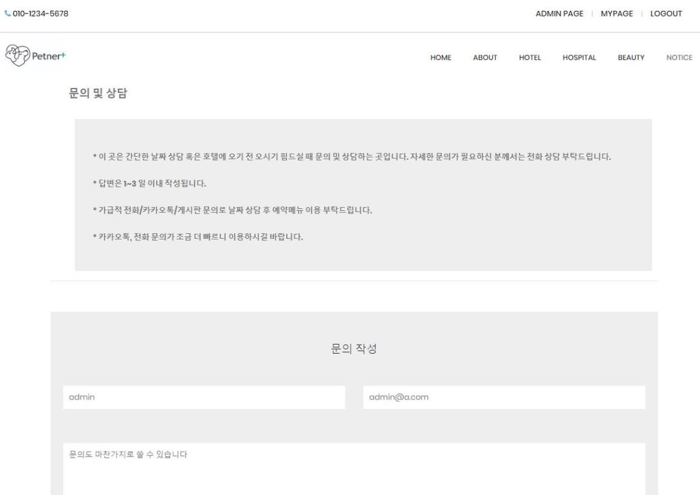
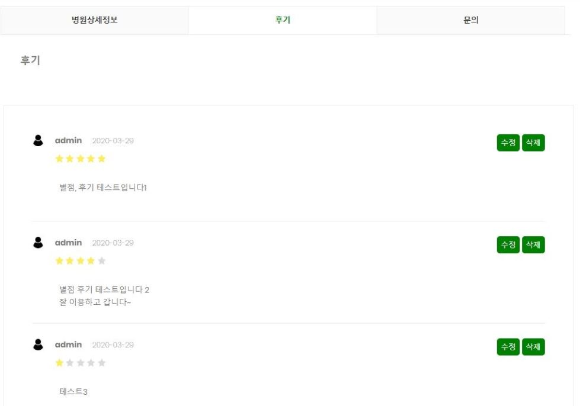
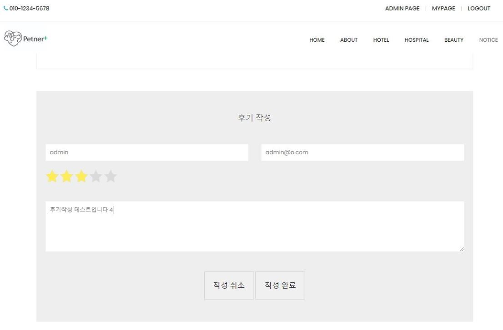
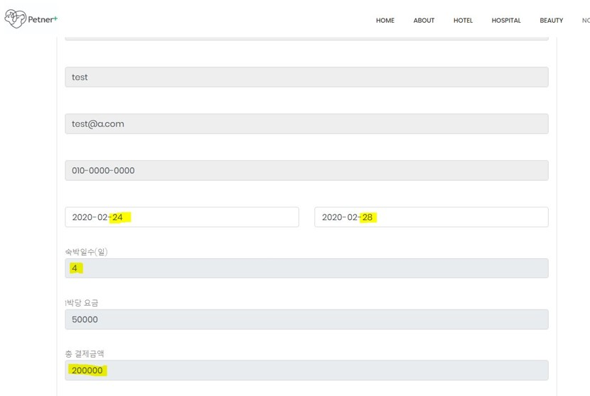
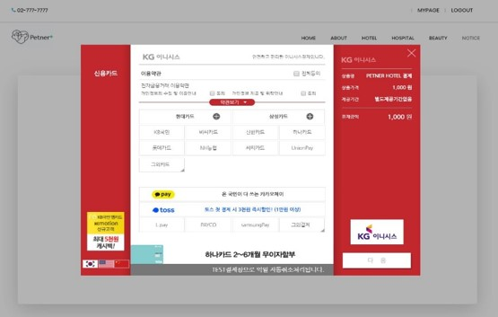
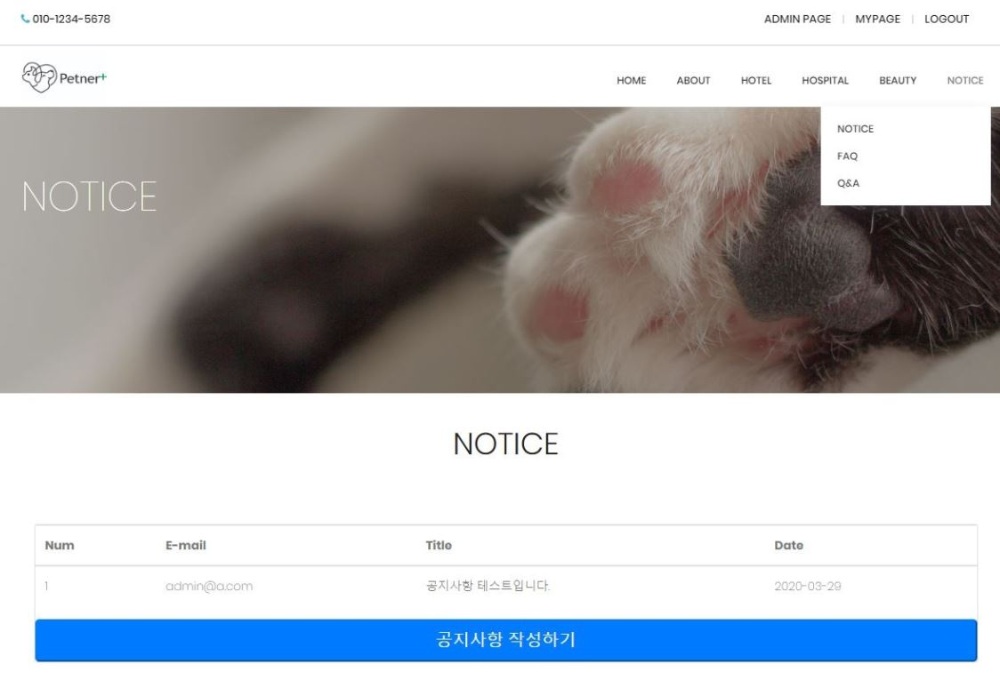
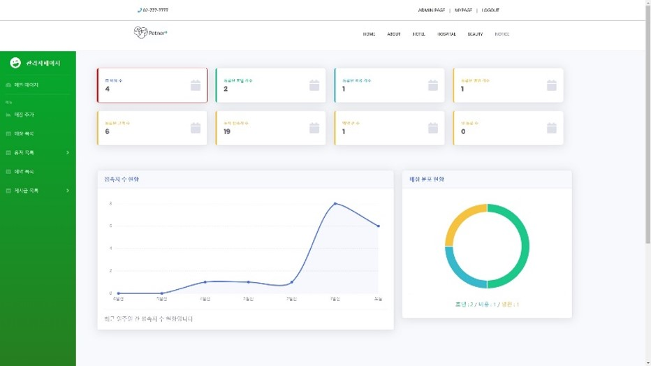

Semi Project
Petner+(페트너플러스)

ABOUT
Semi Project
구현기간 : 2020.01 ~ 2020.02
PETNER+라는 반려동물 관리 사이트로써, 반려동물 호텔, 병원, 미용 등
사이트들을 소개시켜주고 예약이 가능하게 해주는 사이트
(반려동물을 위한 중개 사이트)
<개발환경>
language : JSP, HTML5, CSS3, Javascript, jQuery
IDE : Eclipse
Project
|
| 프로젝트 메인 화면입니다. 주요 기능으로는 미용,호텔,병원 중개 기능, 결제, 게시판, 관리자페이지 등입니다. |
|  |  |
| Petner+의 호텔,병원,미용의 공통적인 Home페이지입니다. Type으로 구분되어 있으며, 페이징처리, 검색기능이 있습니다. |
Penter+의 호텔,병원,미용의 공통적인 상세페이지입니다. 사진은 Slide로 넘어가게 처리되어 있습니다. 체크박스로 세부서비스를 미리 볼 수 있습니다. 체크박스 값을 불러온 뒤 split으로 하나하나 나눠서 출력합니다. 아래쪽 메뉴는 3개의 탭으로 나뉘어져 있고, 상세정보/후기/문의로 되어 있습니다. |
|  |  |
| 상세페이지 중 상세정보 탭입니다. 매장의 위치를 지하철, 버스, 자가용으로 오는 방법을 알려주고 그 외 매장에서 입력한 세부정보를 표시해줍니다. 지도는 네이버지도 API를 사용했습니다. |
상세페이지 중 문의 탭입니다. 홈페이지에 관한 문의는 QNA게시판에서 가능하고 각 매장에 대한 문의는 이곳에 남길 수 있습니다. 로그인처리, 대댓글이 가능합니다. |
|  |  |
| 상세페이지 중 후기 탭입니다. 로그인을 한 사람만 후기를 남길 수 있고, 로그인한 이메일과 후기작성자가 같으면 수정, 삭제가 가능합니다. |
평점(별점 5점 만점)을 남길 수 있고 평균평점이 HOTEL리스트와 세부페이지 처음에 보이게 됩니다. |
|  |  |
| 예약 페이지입니다. 사용자의 정보를 불러오고, 체크인/체크아웃 날짜를 선택하면 숙박일수, 1박당 요금에 따른 총 결제금액을 바로 계산해서 보여주게 되고, DB에 이 정보들을 담게 됩니다. |
결제 페이지입니다. 아임포트(IMPORT) API를 사용하였고, 실제로 결제가 되고, 나중에 아임포트 관리자모드에서 취소도 가능합니다. |
|  |  |
| 공지사항 및 FAQ/QNA 페이지입니다. 게시판을 구현하였고, 공지사항은 관리자만 글을 작성할 수 있습니다. FAQ는 JQUERY와 JavaScript로 미적인 기능들을 추가했습니다. QNA는 모두가 쓰기/읽기가 가능하며, 댓글을 달 수 있습니다. |
관리자 페이지입니다. 사이트의 운영 정보를 볼 수 있습니다 또, 호텔/병원/미용 등 업체들을 직접 등록할 수 있습니다. |
myCode
세미때 맡은 주 파트는 예약/결제 페이지였습니다.
- 예약 정보 및 체크인&체크아웃 날짜를 선택하면 자동으로
숙박일수와 숙박 요금이 계산되어 나타나고, 예약자 정보를 불러옵니다. - 아임포트(IMPORT) API를 사용하여 실제 결제를 구현하였습니다.
- 예약/결제 정보들을 DB에 담아 조회할 수 있습니다.
- 추가로 네이버 지도 API를 사용하여 지도를 구현하였습니다.
예약의 기본 정보들을 일단 앞의 페이지에서 불러옵니다. 또, 체크인/체크아웃 날짜를 선택하는데 캘린더를 사용하였습니다.
선택하게되면, JavaScript로 자동으로 숙박일수, 총 결제요금을 계산하였습니다.
예약하기 버튼을 누르면 DB에 정보들이 담기게(INSERT)됩니다.

라디오 버튼으로 타입을 정한 뒤 매장명, 주소, 전화번호, 메인사진 등을 입력해 줍니다.
매장추가는 매장회원이 아닌 운영자가 직접 추가하는 방법을 사용했는데 운영자가 매장의 정확한 정보를 확인 한 후 추가한다는 컨셉이었습니다.
매장을 추가한 뒤에 매장정보 수정, Detail 정보 추가,수정이 가능합니다.
매장 Detail은 앞의 HOTEL등 메뉴의 리스트에 나온 매장을 클릭한 뒤 들어가는 정보들을 추가해 줍니다.
REVIEW
소감
과 특성상 여러 가지를 배우다가 개발을 조금 배운 뒤 웹사이트 하나 전체를 구현하는 것은
부담감도 많았고, 힘들었다. 하지만 1차,2차,3차 심사 전 팀원들과 상의하고, 구글링하며
많은 것을 배웠고 부족한 점이 많다는 것도 많이 느끼게 되었다.
그래서 더 배워야겠다는 필요성을 절실히 느끼게 되기도 하고, 개발에 좀 더 관심이 생겼던 것 같다.
처음 해본 웹프로젝트였지만 졸업작품 전시회를 잘 마무리하면서 뿌듯했다.
이 프로젝트는 JSP MVC1을 활용하였는데, JSP MVC2를 활용하여 다시 만들어보고싶기도 하다.